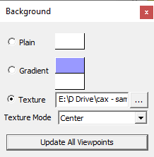
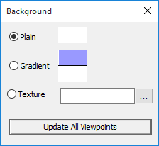
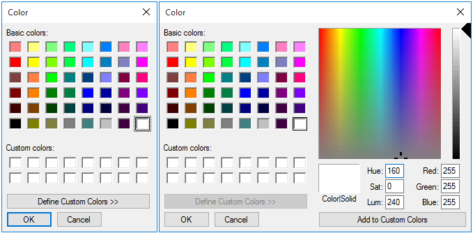
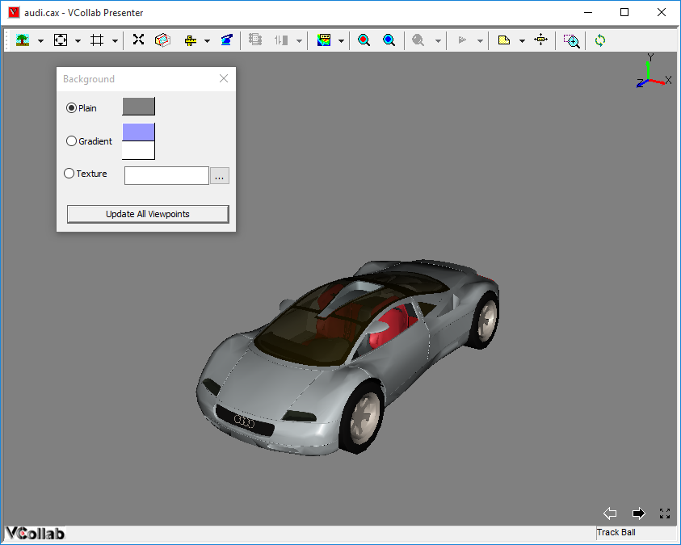
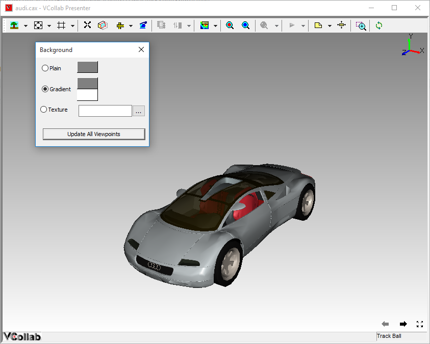
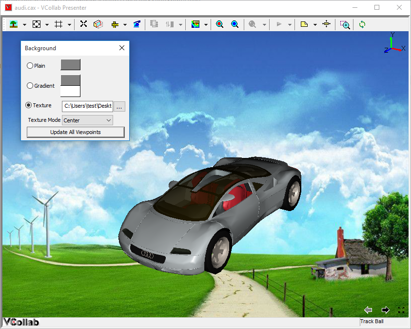

Background
The users of VCollab Presenter can change the type and colour of the background of the viewer window.
Background Types
- Plain
- Gradient (of two colors)
**Default **
Type - Gradient
Colors - Blue and White
Note: If the CAX file contains any viewpoint with texture image, VCollab Presenter allows users to change texture positioning and style. i.e, centered, stretch and tiled texture.
If the texture image exists as background, then the panel shows texture mode options.
Background panel

The various options in the Background panel are explained below
| Plain | Single Background color |
| Gradient | Gradient of two colors |
| Texture | User picked Image |
| Update All Viewpoints | Updates all viewpoints with set background. |
Plain
Selecting this type sets a single color as background. Users can change into any basic color or custom defined color.
Steps for changing background into a basic color
To change the color into any basic color,
- Right click in the viewer window to open the context menu
- Click Background To open the background panel
- Select Plain

- Click the color box to open the color dialog box.

- Select a color or Define a custom color and click OK.

Gradient Type
Users can choose the Gradient type background by selecting two different colors.
Steps for setting the background with Gradient type
- Click Gradient in the background panel
- Select two colors from the two color boxes on the right.
- A Gradient background with the two selected colors will be applied in the viewer.

Texture Image Background
Users can opt for texture type background by selecting an image
Steps for setting the background with Texture type
- Click Texture in the background panel.
- Click the browser button to select the image.
- Select a texture mode, from the options Center, Stretch, Tile and
Fit View. Center is the default option.
- Center - Image center and Viewport center are the same.
- Stretch - Image is stretched to fit the viewport window.
- Tile - Image is tiled to the viewport.
- Fit View - Stretching the image to fit the window without changing image aspect ratio.
